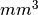

algorithms.metrics¶
Distance¶
Calculates distance between two volumes.
Inputs:
[Mandatory]
volume1: (an existing file name)
Has to have the same dimensions as volume2.
volume2: (an existing file name)
Has to have the same dimensions as volume1.
[Optional]
mask_volume: (an existing file name)
calculate overlap only within this mask.
method: ('eucl_min' or 'eucl_cog' or 'eucl_mean' or 'eucl_wmean' or
'eucl_max', nipype default value: eucl_min)
""eucl_min": Euclidean distance between two closest points
"eucl_cog": mean Euclidian distance between the Center of Gravity of
volume1 and CoGs of volume2 "eucl_mean": mean Euclidian minimum
distance of all volume2 voxels to volume1 "eucl_wmean": mean
Euclidian minimum distance of all volume2 voxels to volume1 weighted
by their values "eucl_max": maximum over minimum Euclidian distances
of all volume2 voxels to volume1 (also known as the Hausdorff
distance)
Outputs:
distance: (a float)
histogram: (a file name)
point1: (an array with shape (3,))
point2: (an array with shape (3,))
ErrorMap¶
Calculates the error (distance) map between two input volumes.
Example¶
>>> errormap = ErrorMap()
>>> errormap.inputs.in_ref = 'cont1.nii'
>>> errormap.inputs.in_tst = 'cont2.nii'
>>> res = errormap.run() # doctest: +SKIP
Inputs:
[Mandatory]
in_ref: (an existing file name)
Reference image. Requires the same dimensions as in_tst.
in_tst: (an existing file name)
Test image. Requires the same dimensions as in_ref.
metric: ('sqeuclidean' or 'euclidean', nipype default value:
sqeuclidean)
error map metric (as implemented in scipy cdist)
[Optional]
mask: (an existing file name)
calculate overlap only within this mask.
out_map: (a file name)
Name for the output file
Outputs:
distance: (a float)
Average distance between volume 1 and 2
out_map: (an existing file name)
resulting error map
FuzzyOverlap¶
Calculates various overlap measures between two maps, using the fuzzy definition proposed in: Crum et al., Generalized Overlap Measures for Evaluation and Validation in Medical Image Analysis, IEEE Trans. Med. Ima. 25(11),pp 1451-1461, Nov. 2006.
in_ref and in_tst are lists of 2/3D images, each element on the list containing one volume fraction map of a class in a fuzzy partition of the domain.
Example¶
>>> overlap = FuzzyOverlap()
>>> overlap.inputs.in_ref = [ 'ref_class0.nii', 'ref_class1.nii' ]
>>> overlap.inputs.in_tst = [ 'tst_class0.nii', 'tst_class1.nii' ]
>>> overlap.inputs.weighting = 'volume'
>>> res = overlap.run() # doctest: +SKIP
Inputs:
[Mandatory]
in_ref: (a list of items which are an existing file name)
Reference image. Requires the same dimensions as in_tst.
in_tst: (a list of items which are an existing file name)
Test image. Requires the same dimensions as in_ref.
[Optional]
in_mask: (an existing file name)
calculate overlap only within mask
out_file: (a file name, nipype default value: diff.nii)
alternative name for resulting difference-map
weighting: ('none' or 'volume' or 'squared_vol', nipype default
value: none)
'none': no class-overlap weighting is performed. 'volume': computed
class-overlaps are weighted by class volume 'squared_vol': computed
class-overlaps are weighted by the squared volume of the class
Outputs:
class_fdi: (a list of items which are a float)
Array containing the fDIs of each computed class
class_fji: (a list of items which are a float)
Array containing the fJIs of each computed class
dice: (a float)
Fuzzy Dice Index (fDI), all the classes
jaccard: (a float)
Fuzzy Jaccard Index (fJI), all the classes
Overlap¶
Calculates Dice and Jaccard’s overlap measures between two ROI maps. The interface is backwards compatible with the former version in which only binary files were accepted.
The averaged values of overlap indices can be weighted. Volumes now can be reported in , although they are given in voxels to keep backwards compatibility.
Example¶
>>> overlap = Overlap()
>>> overlap.inputs.volume1 = 'cont1.nii'
>>> overlap.inputs.volume2 = 'cont2.nii'
>>> res = overlap.run() # doctest: +SKIP
Inputs:
[Mandatory]
bg_overlap: (a boolean, nipype default value: False)
consider zeros as a label
vol_units: ('voxel' or 'mm', nipype default value: voxel)
units for volumes
volume1: (an existing file name)
Has to have the same dimensions as volume2.
volume2: (an existing file name)
Has to have the same dimensions as volume1.
[Optional]
mask_volume: (an existing file name)
calculate overlap only within this mask.
out_file: (a file name, nipype default value: diff.nii)
weighting: ('none' or 'volume' or 'squared_vol', nipype default
value: none)
'none': no class-overlap weighting is performed. 'volume': computed
class-overlaps are weighted by class volume 'squared_vol': computed
class-overlaps are weighted by the squared volume of the class
Outputs:
dice: (a float)
averaged dice index
diff_file: (an existing file name)
error map of differences
jaccard: (a float)
averaged jaccard index
labels: (a list of items which are an integer (int or long))
detected labels
roi_di: (a list of items which are a float)
the Dice index (DI) per ROI
roi_ji: (a list of items which are a float)
the Jaccard index (JI) per ROI
roi_voldiff: (a list of items which are a float)
volume differences of ROIs
volume_difference: (a float)
averaged volume difference
Similarity¶
Calculates similarity between two 3D or 4D volumes. Both volumes have to be in the same coordinate system, same space within that coordinate system and with the same voxel dimensions.
Note
This interface is an extension of
nipype.interfaces.nipy.utils.Similarity to support 4D files.
Requires nipy
Example¶
>>> from nipype.algorithms.metrics import Similarity
>>> similarity = Similarity()
>>> similarity.inputs.volume1 = 'rc1s1.nii'
>>> similarity.inputs.volume2 = 'rc1s2.nii'
>>> similarity.inputs.mask1 = 'mask.nii'
>>> similarity.inputs.mask2 = 'mask.nii'
>>> similarity.inputs.metric = 'cr'
>>> res = similarity.run() # doctest: +SKIP
Inputs:
[Mandatory]
volume1: (an existing file name)
3D/4D volume
volume2: (an existing file name)
3D/4D volume
[Optional]
mask1: (an existing file name)
3D volume
mask2: (an existing file name)
3D volume
metric: ('cc' or 'cr' or 'crl1' or 'mi' or 'nmi' or 'slr' or a
callable value, nipype default value: None)
str or callable
Cost-function for assessing image similarity. If a string,
one of 'cc': correlation coefficient, 'cr': correlation
ratio, 'crl1': L1-norm based correlation ratio, 'mi': mutual
information, 'nmi': normalized mutual information, 'slr':
supervised log-likelihood ratio. If a callable, it should
take a two-dimensional array representing the image joint
histogram as an input and return a float.
Outputs:
similarity: (a list of items which are a float)